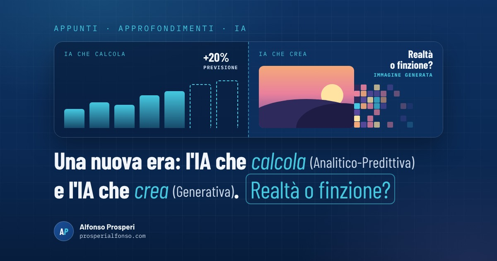

Ogni tanto arriva una tecnologia che cambia le regole: è successo con internet, poi con lo smartphone. L'intelligenza artificiale è la prossima, anzi è già qui. La usiamo quando il navigatore ci evita una coda, quando la banca blocca un pagamento strano, quando il telefono riconosce il nostro volto. Per capire cosa sta succedendo conviene distinguere due grandi famiglie: l'IA che calcola e prevede (Analitico-Predittiva) e l'IA che crea (Generativa). Entrambe portano benefici enormi, ma la seconda ci costringe a farci una domanda che fino a ieri era scontata: quello che vedo è realtà o finzione?
L'IA che calcola e prevede (Analitico-Predittiva)
Gli addetti ai lavori la chiamano IA Analitico-Predittiva (o discriminativa). Guarda dati che esistono già, li classifica, trova schemi che a occhio non vedremmo mai e prova a indovinare cosa succederà. Non inventa niente: risponde a domande come "questa email è spam?", "questo pagamento è sospetto?", "quanto pioverà domani?".
Il suo superpotere è il calcolo. Fa in pochi secondi analisi che a una persona richiederebbero mesi o anni, e lo fa ovunque:
- Scienza e medicina. Il Nobel per la chimica 2024 è andato anche ai creatori di AlphaFold, un'IA che ha previsto la forma di oltre 200 milioni di proteine. Un lavoro che con i metodi tradizionali avrebbe richiesto decenni, e che oggi aiuta a studiare farmaci e malattie. In ospedale sistemi simili aiutano i medici a leggere radiografie ed esami.
- Meteo. Dal 2025 il Centro europeo per le previsioni meteorologiche usa un modello basato sull'IA che, secondo l'ente, migliora fino al 20% alcune previsioni consumando circa mille volte meno energia dei modelli tradizionali.
- Vita di tutti i giorni. Il filtro antispam, il navigatore che stima l'ora di arrivo, il conto in banca che segnala un'operazione anomala, i suggerimenti di film e musica.
- Lavoro. Previsioni di vendita, gestione del magazzino, controllo qualità in produzione, manutenzione delle macchine prima che si rompano.
L'IA che crea (Generativa)
La seconda famiglia è quella di cui si parla di più: l'IA Generativa. Ha studiato enormi quantità di testi, immagini e suoni e li usa per produrre qualcosa di nuovo: un testo, una traduzione, un'immagine, una voce, un video, del codice. Sono gli assistenti come ChatGPT e Gemini, o i programmi che creano immagini da una descrizione.
Anche qui i benefici sono enormi. Riassume un documento lungo in pochi secondi, aiuta a scrivere una lettera o a capire un modulo complicato, traduce in tempo reale, legge ad alta voce un testo a chi vede poco, aiuta chi programma, fa da insegnante paziente su qualsiasi argomento. In Italia la usa già circa un adulto su cinque, e tra i ragazzi di 14-19 anni più della metà, secondo i dati Istat.
Il punto delicato: realtà o finzione?
C'è però una differenza importante tra le due famiglie. L'IA che calcola lavora su fatti che esistono. L'IA che crea, per definizione, produce cose che non sono mai esistite: una foto di un evento mai accaduto, la voce di una persona che non ha mai detto quelle parole, un articolo scritto bene ma pieno di dati inventati.
Finché lo sappiamo, è uno strumento creativo. Il problema nasce quando non riusciamo più a distinguere la realtà dalla finzione. Le nostre opinioni si formano su quello che vediamo e leggiamo: se una parte di quello che vediamo è costruito, anche il nostro giudizio rischia di essere sempre meno oggettivo, spesso senza che ce ne accorgiamo. E c'è l'effetto contrario, forse ancora più subdolo: davanti a un video vero, qualcuno può dire "è fatto con l'IA" e seminare il dubbio. Quando tutto può essere falso, anche la verità diventa più facile da negare.
A questo si aggiunge un limite tecnico: gli assistenti generativi a volte sbagliano con grande sicurezza. Inventano nomi, numeri e fonti in modo convincente, perché il loro scopo è produrre una risposta plausibile, non verificare che sia vera.
Come restare lucidi
- Chiediti da dove arriva un contenuto. Chi l'ha pubblicato per primo? È una fonte che conosci?
- Cerca conferme. Una notizia importante la riportano più fonti affidabili. Se la trovi in un solo post, aspetta.
- Diffida delle emozioni forti e immediate. Rabbia, paura e stupore sono il carburante dei contenuti falsi.
- Usa l'IA come aiuto, non come oracolo. Per idee, bozze e riassunti va benissimo; dati, date e numeri importanti vanno sempre ricontrollati.
Anche le regole si stanno adeguando. Dal 2 agosto 2026 l'AI Act europeo obbliga a dire alle persone quando parlano con un'IA, a marcare in modo riconoscibile i contenuti generati e a dichiarare i deepfake. In Italia la legge 132 del 2025 ha introdotto il reato di diffusione illecita di contenuti falsificati con l'IA, punito con la reclusione da uno a cinque anni.
In sintesi: l'IA non è buona o cattiva in sé. Quella che calcola ci sta già aiutando a curare, prevedere e lavorare meglio; quella che crea mette nelle mani di tutti uno strumento potentissimo, e proprio per questo ci chiede di tenere sempre accesa la domanda: realtà o finzione? La differenza la farà quanto la capiamo e con quanta testa la usiamo.
Fonti
- Open, Nobel per la chimica 2024 a Baker, Hassabis e Jumper per la struttura delle proteine
- MeteoWeb, l'ECMWF lancia il sistema di previsione meteo con l'IA (febbraio 2025)
- AGI, dati Istat sull'uso dell'intelligenza artificiale in Italia (22 aprile 2026)
- Agenda Digitale, art. 50 AI Act: la trasparenza diventa operativa dal 2 agosto 2026
- Normattiva, legge 23 settembre 2025 n. 132 sull'intelligenza artificiale
- Studio Cataldi, il nuovo reato di deepfake (art. 612-quater c.p.)